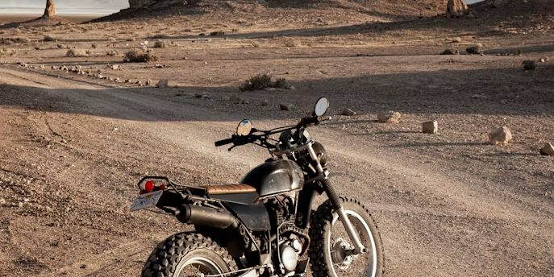

01
Survive
Breakdowns, preparedness and roadside resilience.
06Recover
Work down this page in order. The first three steps matter whether or not any recovery service is available to you.
If anyone is injured, contact local emergency services now. Frontier Moto is not an emergency service and cannot reach you.
If nobody is hurt: get yourself and the machine fully clear of moving traffic, make yourself visible, and stand off the road on the uphill side. The motorcycle can wait. Read the six steps below before you contact anyone.
Position and visibility come before the machine. Every time, including when the fault seems trivial.
Push the bike fully clear of the lane if it will not run. A partly clear bike is a hazard, not a stopped vehicle.
High visibility on, hazards on if fitted, and a warning marker back up the road further than feels necessary.
Not between the bike and traffic. Uphill and behind a barrier if there is one.
Adrenaline hides injury. Do this deliberately before you look at the motorcycle.
Note where you are precisely enough to tell someone. Nearest marker, town, junction, direction of travel.
Only now. The machine has waited this long and will wait another minute.
Work down this list in order. Steps one to three matter whether or not any recovery service is available to you.
Get clear of moving traffic, make yourself visible, and check everyone before you check the machine. If anyone is injured, contact local emergency services immediately. Frontier Moto is not an emergency service.
Road name or number, direction of travel, the last town you passed and roughly how far back. A screenshot of your map position is worth more than a description.
Make, model, approximate weight, whether the rear wheel turns freely, and whether it can be rolled or must be lifted.
What happened, at what speed, what it sounded like, and what it does now. Not what you think is broken.
Whether you are somewhere safe, whether you have water, whether it is getting dark, and whether you are alone.
With the first five ready, a request takes under a minute instead of a frustrating ten.
Recovery dispatch is not live. There is no vehicle on standby, no coverage map, no response time and no number that reaches a driver. The form on this page is a front end demonstration of how a request would work. It transmits nothing, and nobody is notified when you submit it.
We would rather show the process and say plainly that it is not running than publish a phone number that no one answers. When recovery does operate, the coverage area, hours and contact details will be stated here in full, and the form will say where a request has gone.
How a request would be handled
Filling this in will not summon anyone. It is here so the request process is visible and so the fields tell you what information is worth gathering while you wait.
This form does not send anything. There is no backend connected to it. Nothing you type is stored, transmitted or seen by anyone, and no recovery request is created.
Prepared before the ride, because none of it is possible to arrange afterwards.
